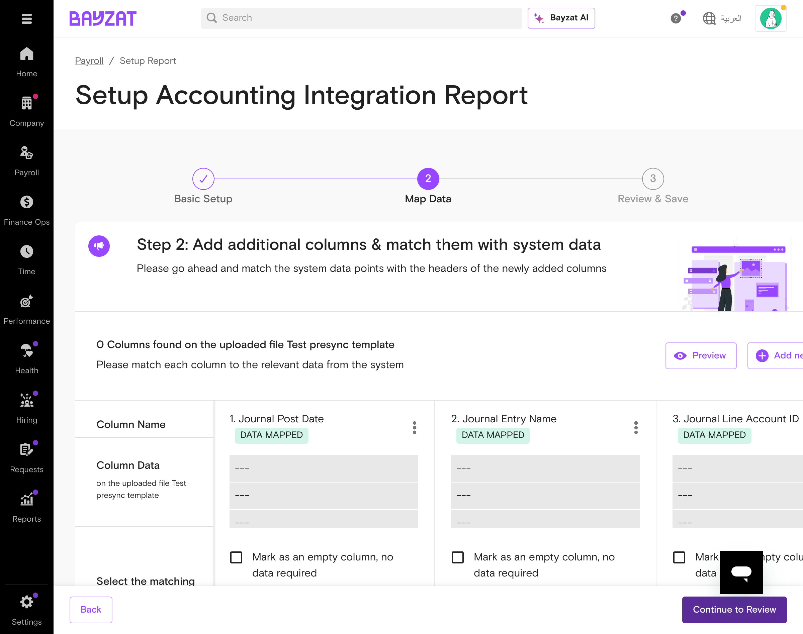

üîÑ Running Payroll Sync

Transaction sync interface showing sync process
Monthly Sync Workflow
1
Verify Payroll Completion
Ensure all payroll calculations are finalized and approved
2
Navigate to Sync Interface
Settings → Payroll → Accounting Integration → Sync Data
3
Select Payroll Period
Choose the month/period you want to sync
4
Preview Data
Review the sync preview to ensure accuracy
5
Execute Sync
Run the synchronization to your accounting system
Quick Sync
As needed
- Open Bayzat → Settings → Payroll
- Click "Accounting Integration"
- Select payroll period to sync
- Click "Sync Now" button
- Wait for completion confirmation
Verify Sync Results
After each sync
- Check sync status indicator
- Review any error messages
- Verify journal entries in accounting system
- Confirm amounts match payroll totals
- Document any issues found
Best Practice: Always run a preview before executing the actual sync, especially for new payroll periods or after configuration changes.
üìà Monitoring Integration Status

Current sync state and status monitoring interface
Connected
Connection Status
Current Month
Last Sync
Variable
Sync Time
View History
Success Rate
Connection Health Check
Daily
- Check green connection indicator
- Verify accounting system access
- Test API connectivity
- Review recent sync history
Sync History Review
Weekly
- Access sync history log
- Review success/failure rates
- Check for recurring issues
- Verify data consistency
Watch For: Connection timeouts, rate limit warnings, or repeated sync failures. These may indicate platform issues or configuration problems.
üìã Sync Reports & Data Verification

Report template configuration showing column mapping
Generate Sync Report
After each sync
- Navigate to Integration → Reports
- Select reporting period
- Choose report template
- Generate and download report
- Share with finance team
Data Reconciliation
Monthly
- Compare payroll totals with accounting entries
- Verify cost center allocations
- Check for missing transactions
- Reconcile bank account balances
- Document any discrepancies
Performance Analytics
Monthly
- Review sync performance metrics
- Analyze error patterns
- Check API usage statistics
- Identify optimization opportunities
- Report to stakeholders
Audit Trail Review
Quarterly
- Generate comprehensive audit report
- Review all sync activities
- Verify compliance requirements
- Archive historical data
- Prepare for external audits
Tip: Set up automated reporting schedules to ensure consistent monitoring and reduce manual effort.
üîß Common Issues & Quick Solutions
❌ Sync failed with "Connection timeout" error
Quick Fix:
- Check your accounting system status page
- Wait 5 minutes and retry the sync
- If problem persists, contact support with error details
⚠️ "Split amount validation failed" in QuickBooks
Quick Fix:
- Check that all payroll items are mapped to accounts
- Ensure debit amounts equal credit amounts exactly
- Review cost center allocations for accuracy
- Re-run the sync after corrections
üîê Authentication failed - need to reconnect
Quick Fix:
- Go to Settings → Payroll → Accounting Integration
- Click "Reconnect" or "Refresh Connection"
- Complete OAuth authentication flow
- Test connection before running sync
üìä Data appears incorrect in accounting system
Quick Fix:
- Check payroll item to account mappings
- Verify cost center assignments are correct
- Review exchange rates if using multiple currencies
- Contact support if discrepancies persist
üîÑ Sync is taking much longer than usual
Quick Fix:
- Check if payroll size has increased significantly
- Verify accounting system performance
- Review API rate limits for your platform
- Consider syncing during off-peak hours
Still need help? Visit our comprehensive troubleshooting guide or contact support with specific error messages.
⚙️ Regular Maintenance Tasks

Post-configuration management interface for ongoing administration
Monthly Health Check
Monthly
- Review connection stability
- Check sync success rates
- Verify account mappings accuracy
- Update any changed cost centers
- Test with sample payroll data
Security Review
Quarterly
- Review user access permissions
- Check OAuth token expiration
- Verify accounting system access
- Update integration passwords if needed
- Document security compliance
Configuration Update
As needed
- Review organizational changes
- Update department mappings
- Add new payroll items
- Adjust cost center allocations
- Test configuration changes
Performance Optimization
Bi-annually
- Analyze sync performance trends
- Review API usage patterns
- Optimize sync scheduling
- Clean up unused configurations
- Plan for scaling needs
Remember: Always test configuration changes in a safe environment before applying to production payroll data.